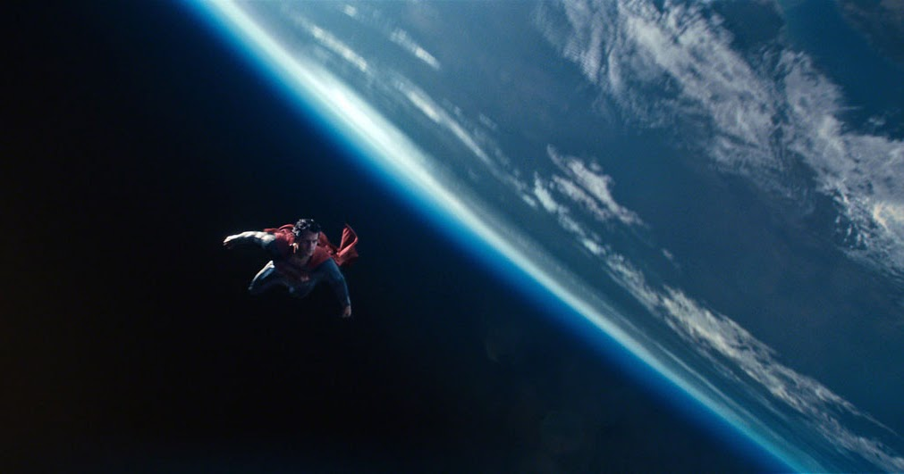

Date de sortie : 2013
Réalisateur : Zack Snyder
Musique : Hans Zimmer
Acteurs principaux : Henry Cavill, Amy Adams, Michael Shannon, Kevin Costner, Russell Crowe
Note globale : 3.5/5
Très surpris de ce film, j'avais un peu peur d'être déçu mais le film est très bien. Une recommandation solide pour les fans de super-héros qui cherchent quelque chose de plus sérieux.
Résumé & Contexte
Man of Steel est un reboot qui explore les origines de Superman de manière plus brute que les anciens films. On suit Clark Kent, originaire de Krypton, élevé au Kansas, qui doit devenir un symbole d'espoir face à la menace du Général Zod qui veut terraformer la Terre pour recréer sa planète d'origine.
Petit point culture : Le film est né en 2008 après que Warner a décidé de stopper l'ancienne franchise. En 2009, suite à une décision légale sur les droits de Jerry Siegel (créateur de Superman), la prod a dû accélérer pour sortir cette version sous l'œil de Christopher Nolan (producteur).
Un début gratifiant
Pour la petite anecdote, j'avais déjà vu ce film quand j'étais petit, mais j'avais absolument tout oublié. C'était donc comme une première découverte pour moi !
Le début est vraiment réussi. C'est agréable de voir Clark petit et découvrir ses pouvoirs étape par étape. Que ce soit le moment où il est submergé par ses sens en classe ou quand il sauve ses camarades de classe dans le bus scolaire, c'était super gratifiant à voir. On sent vraiment le poids de ses responsabilités dès l'enfance.
Lois Lane et la Farm d'Aura
Parlons des personnages : Lois Lane est sympa. Elle n'est pas chiante, pas trop omniprésente et elle sert vraiment l'intrigue sans être la "demoiselle en détresse" de base. C'est génial comme ça.
Le côté Superman est très bien aussi, c'est vraiment de la farm d'aura. Juste pour la scène dans laquelle Superman doit secourir Lois dans l'espace : le mec farm l'aura pendant 10 secondes en restant immobile avant de foncer, merci Superman ! On sent la puissance du perso.

L'OST : Le chef-d'œuvre de Hans Zimmer
On est obligé d'en parler : la musique est magnifique. Hans Zimmer a pondu une OST incroyable qui porte tout le film. Le thème principal ne cherche pas à copier l'ancien de John Williams, il crée quelque chose de nouveau, de plus épique et de plus moderne.
À chaque fois que le piano commence ou que les percussions explosent pendant les scènes de vol, ça donne des frissons. Sans cette musique, le film n'aurait clairement pas le même impact émotionnel.
Technique et Couleurs (Le point noir)
La CGI était pas mal globalement, même si certains plans se voient un peu en fond vert, ce n'est pas si dérangeant pour un film de 2013. PAR CONTRE, LA COULEUR JE NE SUIS PAS OK DU TOUT !!
Le gris bien gris c'est bien quand c'est dans un endroit particulier dans le thème (comme sur Krypton), mais pendant tout le film c'est duuuuur. Ce n'est pas accrochant visuellement, tout manque de vie. Même la Terre vue depuis l'espace était grise... Superman est censé être un symbole d'espoir, un peu de couleur n'aurait pas tué le film.
Le débat sur la prison et l'Aura
La scène de la prison est SURCOTÉE à la mort. J'ai vu tellement d'extraits sur TikTok avec le mot "Aura" en légende, alors que vas-y, il n'y a pas d'aura là-dedans, c'est juste Superman.
VOUS VOULEZ DE L'AURA ?? ALLEZ VOIR SPIDER-MAN 3 et allez à 1 HEURE 04 ET 53 SECONDES !! Ça c'est du vrai charisme.
Conclusion
Malgré le filtre gris qui pique un peu les yeux, ça reste un très bon film de super-héros. L'action est massive, Henry Cavill est parfait dans le rôle et l'histoire se tient bien. Je recommande !
Note finale : 3.5/5 ★★★⯪☆